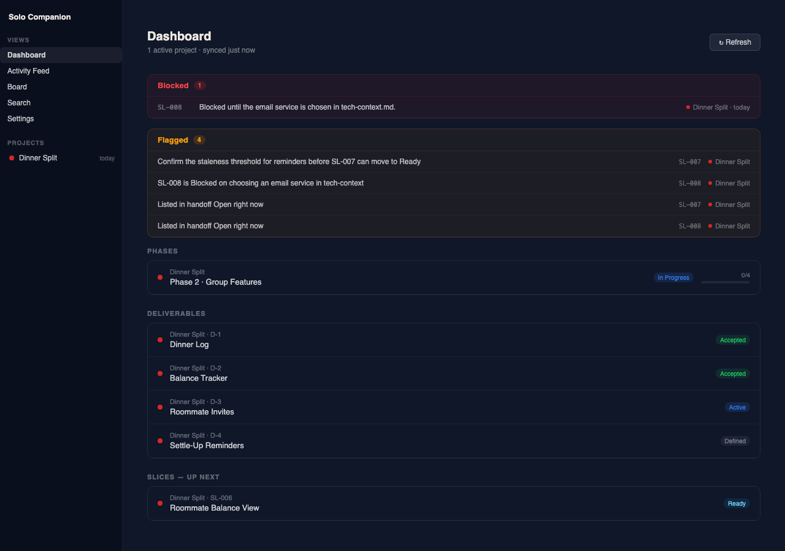
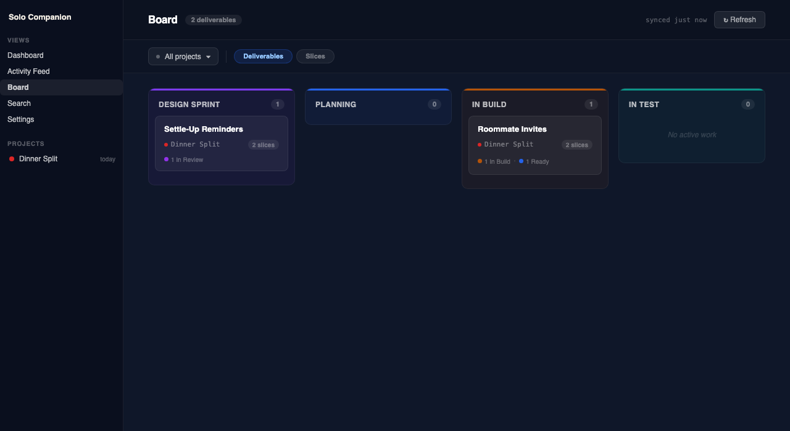
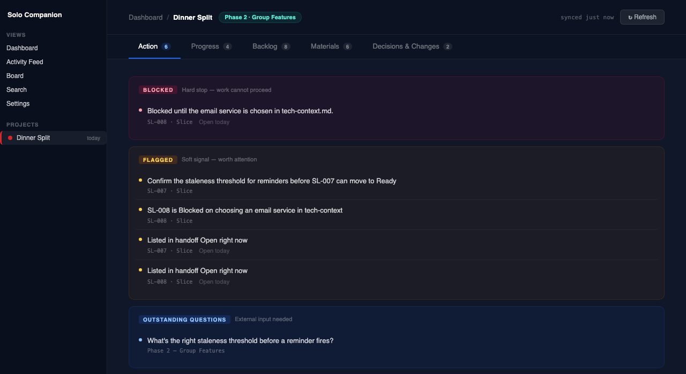

← Solo Builder Framework
Solo Builder Framework
Solo Companion
A local dashboard for every project you're running through the framework —
phases, decisions, activity, and search, all in one place. Runs entirely
on your machine. Nothing is sent anywhere.
What it is
Every project running through the framework produces real files as it goes — a plan,
a backlog, decisions and why they were made, what's blocked, what's next. Right now
the only way to see any of that is to ask Claude or Cursor directly, inside whatever
chat happens to be open.
Solo Companion is a separate window into all of it. One project or several, it's
where you check status without opening a chat — and if you've got more than one
project running, it's the only place that shows you where every one of them actually
stands, all at once.
What you'll see

Dashboard. What needs your attention right now, across every active project, the moment you open it.

Board. Every unit of work laid out by where it actually is, across every project — not by memory.

Project view. The full picture on one project — what's blocked, what's flagged, what's still an open question — without asking.
Download
Before you start
·
Git and Python need to already be on your machine. The installer checks and tells you if either is missing.
·
It sets itself to start automatically from now on, and opens straight to your dashboard when it's done — usually well under a minute.
·
You'll need the Framework installed first. First launch asks you to point Solo Companion at your Development Files folder — the one the Framework installer creates.